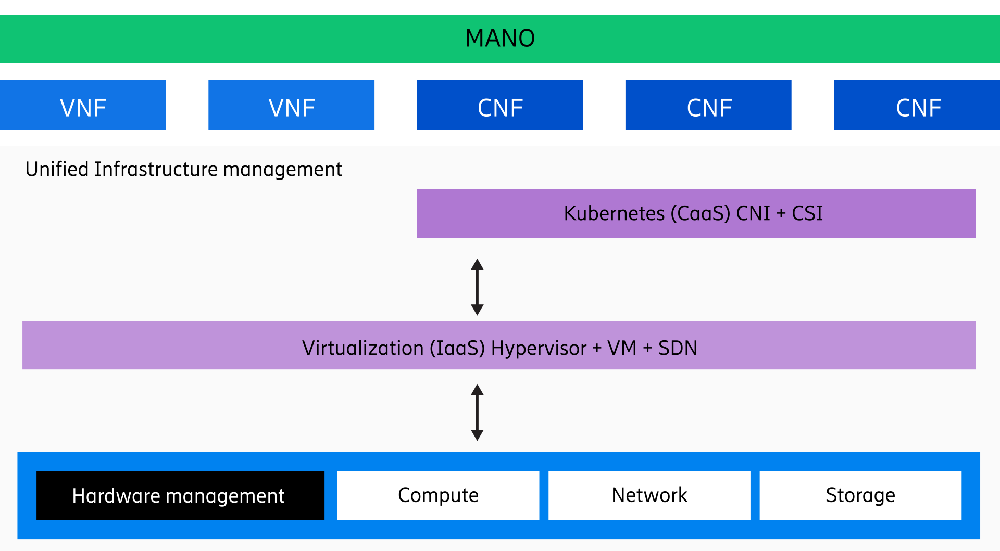
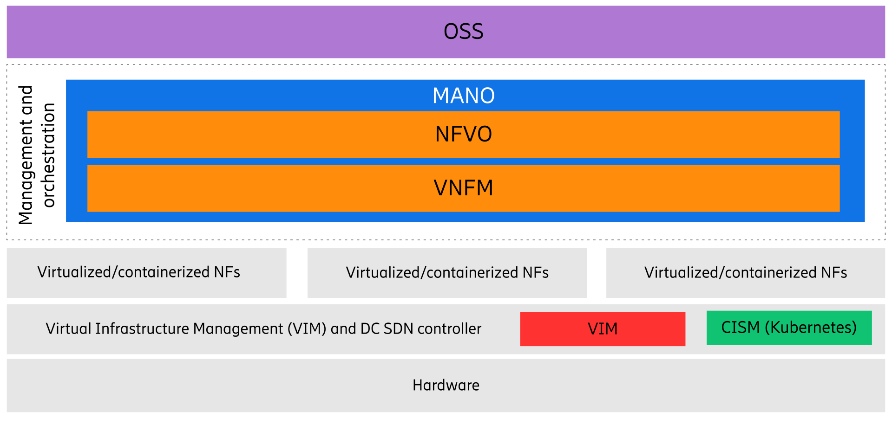
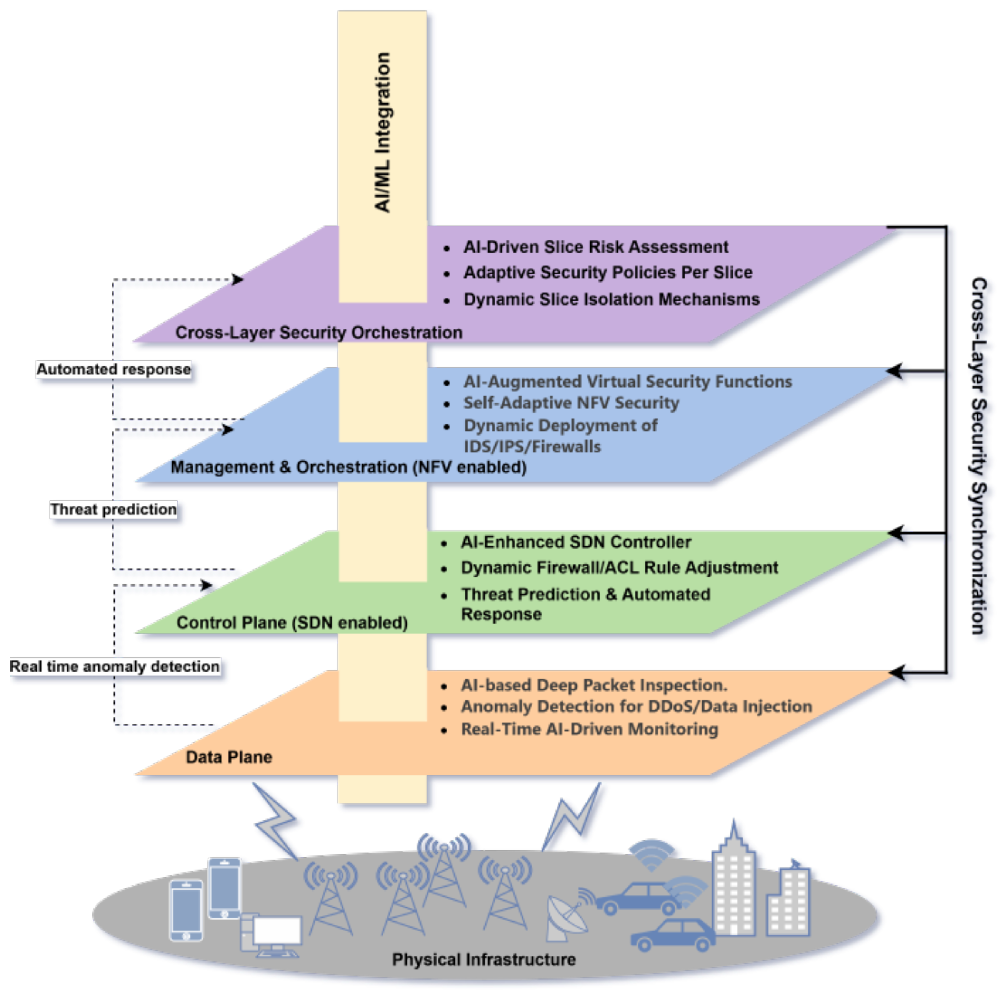

A real-time intrusion detection and automated response system for 5G virtualized network slices. Detect cross-slice threats, analyze anomalies, and trigger automated quarantine — before damage spreads.
5G network slicing allows operators to create multiple virtual networks (slices) on a single shared physical infrastructure. Each slice is an isolated, end-to-end virtual network tailored for a specific use case — with its own bandwidth, latency guarantees, and security policies. Think of it as separate lanes on a highway: same road, but each lane has different speed limits and rules.
An IoT slice (mMTC) might have thousands of easily-compromised sensors. A medical slice (URLLC) handles remote surgery with sub-1ms latency requirements. If an attacker compromises an IoT device and jumps to the URLLC slice, lives are at risk. That's why slice isolation — and SliceGuard — is critical.
High-bandwidth applications like 4K/8K streaming, virtual reality, and cloud gaming requiring massive throughput.
Mission-critical applications like autonomous driving, remote surgery, and industrial automation requiring ultra-low latency.
IoT deployments with millions of sensors and devices — smart cities, agriculture monitoring, and environmental tracking.
From the core NFV vulnerability to automated PDU quarantine, this is the complete lifecycle of SliceGuard's dual-model intrusion detection and response architecture.
5G networks use NFV (Network Function Virtualization) to run multiple slices on the same physical hardware, managed by a shared Hypervisor. Because slices share CPU, RAM, and NIC resources, Cross-Slice Attacks are possible: an attacker flooding the mMTC slice can exhaust the hypervisor's CPU, causing URLLC packet delays that could crash an autonomous vehicle's braking system.
The IDS integrates directly at the UPF (User Plane Function) inside the 5G Core. It does not treat a slice as one opaque tunnel. Instead, it performs Deep Packet Inspection and Flow Analysis on individual connections:
Each slice has multiple PDU sub-lanes. Each car is a device flow tracked by its IP / SUPI. Zombies flood specific PDUs — the SMF firewall targets only those lanes.
Unlike a basic firewall that only checks ports and IPs, the ML engine continuously extracts statistical "vital signs" grouped into four categories:
The extracted features are fed simultaneously into two complementary models:
When combined confidence exceeds 65%, the system triggers automated quarantine.
Human reaction time is too slow for URLLC. The IDS autonomously executes a surgical quarantine:
Because the malicious PDU sessions are dropped at the SMF level, the flood physically stops entering the core. The hypervisor CPU buffers drain, and the URLLC slice is instantly restored to sub-1ms latency.
What happens to the terminated sessions? The devices are now disconnected from the data plane. The network operator can choose to permanently blacklist the device's SUPI, or place it in a remediation pool to be scanned. Once verified clean, the device is allowed to re-attach and establish a brand new, clean PDU session.
Understanding the architecture of virtualization layers is critical to understanding why 5G is vulnerable to cross-slice attacks. Isolation is logical, not physical.

Historically, telecom networks relied on dedicated, purpose-built physical hardware for every individual function. 5G fundamentally shifts this paradigm by utilizing NFV.
Instead of specialized hardware, 5G uses standard commercial off-the-shelf (COTS) servers. A hypervisor creates a virtualization layer, decoupling the software from the hardware. Network functions (like firewalls, UPFs, or routers) now run entirely as software Virtual Machines (VNFs) or Containers (CNFs) sharing the same underlying CPU, storage, and memory pool.

This software-driven approach is what enables Network Slicing. The network orchestrator weaves these virtual functions together to create independent logical slices (e.g., eMBB, URLLC, mMTC) that operate simultaneously on the same hardware.
The Vulnerability: While these slices are strictly isolated in software via routing rules and virtual firewalls, they physically share the exact same hypervisor, CPU caches, memory buses, and NICs. This means an attacker who overwhelms or exploits the hardware from a low-security slice can bypass software isolation entirely, directly impacting mission-critical slices through resource contention and hardware side-channels.
SliceGuard is built to detect and neutralize threats that exploit shared physical infrastructure to breach the isolation boundaries between virtualized network slices.
Discovered in 2017, Meltdown and Spectre are prime examples of hardware-based side-channel attacks. They exploit modern CPU performance features—speculative execution and branch prediction—to bypass hardware security boundaries.
By forcing the CPU to mistakenly access secure data and observing the cache side-channel timing, attackers can leak sensitive information. These fundamental flaws highlight why strict resource limitation and zero-trust policies are essential in shared 5G/6G environments.
Overwhelming shared resources to cause service failures. Attackers exploit weak slices (e.g., IoT) to consume shared hypervisor CPU/RAM, stealing resources and starving critical URLLC slices.
Observing contention on shared resources, such as the ring interconnect in processor chips, to infer secure data and break cross-slice isolation boundaries stealthily.
Exploiting authentication gaps and weak protocols to steal traffic, impersonate legitimate network functions, and gain unauthorized access to slice resources.
"As network slicing is the chief enabler for future Beyond 5G (B5G) and 6G networks, multiple tenants interoperate on a common physical infrastructure. However, this opens the doors to cross-slice disruptions via Man-in-the-Middle (MITM) attacks... This paper addresses cross-network slice disruptions in a zero-trust and multi-tenant based 5G network by proposing two complementary design techniques: secure communication mechanisms (such as Attribute-Based Encryption) and Artificial Intelligence (AI)-based anomaly detection to enforce strict isolation."
To combat cross-slice attacks, SliceGuard employs a hybrid framework combining static resource limitation, AI-driven detection across network planes, and zero-trust principles.
Against Resource Theft and Side-Channel attacks, SliceGuard enforces strict Resource Limitation. By assigning a static hardware limit (e.g., dedicated CPU cores and RAM) to each slice, we physically prevent exhaustion. Even if an attacker floods an mMTC slice, they cannot consume resources beyond their hard-capped limit, ensuring critical URLLC slices remain completely unaffected.

AI-Driven Threat Detection across Network Planes
AI inspects actual data payloads in real-time using Deep Packet Inspection to spot malicious signatures and anomalies at the flow level.
The SDN controller monitors traffic routing. If suspicious patterns move between slices, it dynamically rewrites OpenFlow rules to block malicious packets.
Utilizes Network Function Virtualization to instantly deploy virtual firewalls or IDS exactly where a slice is under attack.
Implementing strict verification for all inter-slice communication. No implicit trust is granted based on network location.
Securing authentication across different network slices and operators using decentralized ledger technology.
"By fusing Artificial Intelligence (AI), Software-Defined Networking (SDN), and Network Function Virtualization (NFV), the framework eliminates the 'siloed' approach of traditional cybersecurity. It provides a holistic, autonomous, and context-aware defense mechanism capable of surgically removing malicious traffic at the flow level before it can destabilize the broader network. The research establishes a highly scalable, intelligent architecture... providing a blueprint for networks that can inherently defend themselves against the complex reality of cross-slice resource exploitation."
Observe network slices under normal operation, inject controlled threats to stress-test isolation boundaries, and validate the IDS engine's detection and automated response capabilities.
Press Start to activate SliceGuard's monitoring system. The canvas shows 3 isolated network slices running on shared infrastructure: eMBB (streaming — blue packets), URLLC (critical systems — red packets), and mMTC (IoT sensors — green packets). Each lane represents a virtual slice with its own guaranteed QoS.